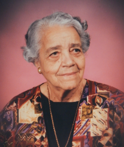

Dorothy Johnson Vaughan, nascida em Kansas City em 1910, foi uma matemática graduada pela Wilberforce University.
Durante seus 28 anos de carreira na NASA, ela chefiou um grupo de trabalho formado exclusivamente por mulheres negras e se tornou a primeira supervisora negra da instituição.
Autodidata, especializou-se na linguagem de programação FORTRAN e, por isso, liderou a seção de programação da Divisão de Análise e Computação do Langley Research Center. Não é uma tarefa pequena! Quem nunca sonhou em ser programadora na NASA? Dorothy realizou esse sonho e participou de projetos muito importantes.
Além disso, ela é uma das mulheres destacadas na história do filme "Estrelas Além do Tempo" (Hidden Figures), que foi lançado nos cinemas.